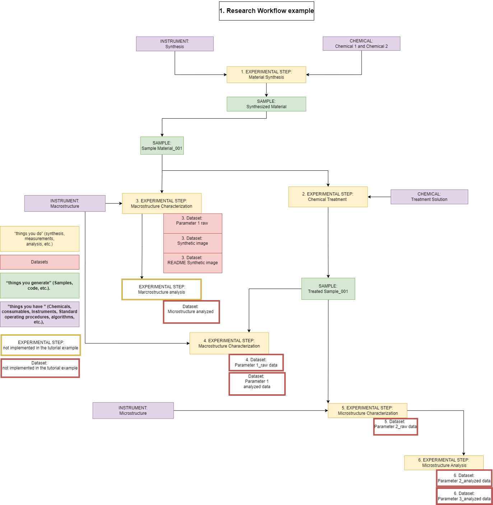
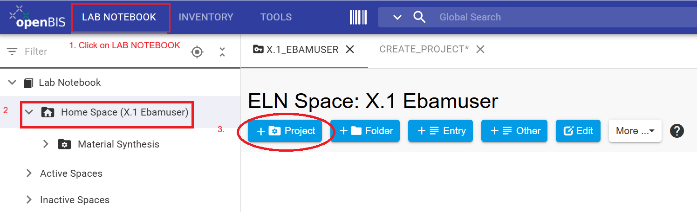
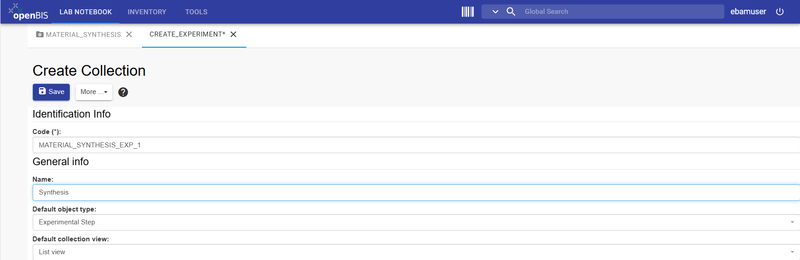

This tutorial uses a generic example to show how to upload data and document the experimental steps that describe the corresponding datasets. Consistent documentation in the ELN supports traceability, discoverability, reusability, and reproducibility of research data.
What you will learn
How to upload research data to the openBIS-Data Store using the graphical user interface (GUI).
How to describe datasets registering experimental steps in the Lab Notebook.
Before you begin
This tutorial requires no prior experience with openBIS.
You need to be registered in the openBIS instance of the Data Store.
Confirm that you can log in to the playground instance.
If you encounter problems, contact the Data Store team.
Download datasets for this tutorial example.
Key concepts
Research workflow
Before uploading data, document in the Lab Notebook (ELN) the experimental steps that describe how each dataset was generated. A useful way to begin is by drawing a flow diagram that represents the logical structure of the research project.
In this workflow, the experimental steps are represented as the “things you do” (yellow boxes), while the research data is represented as datasets (red boxes) attached to experimental steps.

Figure 1: Research workflow of this tutorial example.
openBIS and Data Store core Data Model
This tutorial uses the classic openBIS data model, which consists of five hierarchically structured levels: Space / Project / Collection / Object / Dataset. This helps explain the core logic of openBIS data model and demonstrates
how objects, which are uniquely identified as entities, are connected to one another through parent-child relationships. The core openBIS data model is applied to three compartments of the Data Store (BAM Inventory, FB Inventory and ELN).
In this tutorial, you will work with the Electronic Laboratory Notebook (ELN).
Starting with openBIS 20.10.12, the core data model was expanded to support more flexible representations of complex research projects.
In openBIS everything is represented as Objects. In this tutorial example, the project named 'Material Synthesis' comprises five collections ('Synthesis,Treatment non-destructive, Paremeter 1 and Parameter 2, Parameter 2 Analysis'),
which contains the experimental steps done to generate the research data / Datasets.
Figure 2: All experimental steps are represented as objects. These are organized in several collections within the openBIS-project named 'Material Synthesis' in the ELN.
Lab Notebook
In the Lab Notebook section, each user has a personal folder (Space in openBIS) for organizing research projects, experiments, simulations, and other activities that lead to the creation of datasets. Each of these activities can be represented as an experimental step
and all steps should be connected. To do this, the steps are first registered in openBIS, and then parent-child relationships between them are defined.
Experimental steps should also be linked to all elements used to carry them out, such as chemicals, instruments, and software. Datasets are attached to the corresponding experimental steps.
Welcome to the Lab Notebook - Exercises section
The goal of the research project example is to synthesize a material and characterize it before and after a non-destructive chemical treatment. For simplicity, the example used is kept general so that you can focus entirely on learning how to use the openBIS-Data Store system.
This tutorial will guide you through following Steps:
Step 1: Register a Project.
Step 2: Register a Collection of experimental steps.
Step 3: Register Experimental steps.
Step 4: Register Experimental steps using Templates.
Step 5: Edit Collections of Objects.
Step 6: Register additional Experimental steps using Templates.
Step 7: Upload Data.
Step 8: Filter and Search.
Figure 3: The tutorial example is a research project named “Material Synthesis”. The research project is represented in the Lab Notebook Home Space (X.1 Ebamuser)and
comprises five collections (Synthesis, Treatment non-destructive, Parameter 1, Parameter 2 and Parameter 2 Analysis). Collections contain experimental
steps to which datasets (not visible in the left-hand menu) are attached.
Step 1: Register a Project
Create an openBIS-project in the Lab Notebook to represent the research project 'Material Synthesis'.
Instructions for registering a Project:
Click the upper LAB NOTEBOOK tab.
Navigate to the Lab Notebook in the left-hand menu and open the drop-down menu to select Home Space.
Click + Project to open the project form.
Fill out Code and Description.
Review the entries and click Save.

Figure 4: The upper tab LAB NOTEBOOK displays the Lab Notebook drop-down menu in the left-hand menu. Selecting Home Space opens the middle menu tabs.
General information
This section provides guidance for completing the project form.
Code requirements
Mandatory fields in openBIS are marked with an asterisk (*).
Codes should be meaningful, in English, and between 3 and 30 characters.
A code cannot be modified or reused.
Description requirements
Mandatory for BAM Data Store.
Should contain enough detail to be understandable to people outside the group.
Should follow the format: English//German.
Should contain 2 to 50 words.
Warning: If the Code field is not displayed and you encounter a white page, click the More drop-down menu and select Show Identification Info.
Figure 5: The More drop-down menu displays "Show Identification Info", including the Code(*) field.Figure 6: Enter description (Mandatory for Data Store), review entries and Save.
Warning: Once saved, the project code cannot be changed or reused within the same Space. To remove the project, select
the project in the left-hand menu, open the More drop-down menu, and select Delete.
Figure 7: The saved project is displayed in the left-hand menu under Home Space.
CONGRATULATIONS!!, you have created your first openBIS project.
General information (This is not an exercise)
Access management in openBIS is only possible at the level of "Space" and "Project" levels. "Spaces" are created by the Data Store team upon request, only when necessary. It is recommended to organize
data on which you are collaborating with other colleagues or BAM divisions (e.g., service data) in openBIS project folders and manage access at this level. The permissions assigned to the project apply to underlying contents. Access can be modified for
an user or a group by assigning roles such as Observer, User or Admin to the project folder. Detailed information on the correspondent rights can be found in the Data Store wiki. How to manage access is displayed below.
Access management at the level of Project
Select project in the left-hand menu.
Open the More drop-down menu.
Select manage access.
Assign Role and define to grant to a Group (Division number) or User (BAM user name, all with non-capitalized letters).
Step 2: Register Collections of Experimental steps
A project can contain several collections to organize experimental steps, measurements, and other activities that generate research data.
Collections are one way to logically structure experimental work.
Instructions for creating a collection:
Navigate to the project you created in the left-hand menu.
Click + Other.
Select 'Collection' from the drop-down menu.
Leave autogenerated Code(*) unmodified.
Enter a meaningful Name. In this tutorial example [Name='Synthesis'].
Leave empty Default object type.
Select 'List view' in Default collection view.
Review the entries and click Save.
Figure 8: Navigate to the project in the left-hand menu and click on the + Other tab to create a new CollectionFigure 9: In the Select Collection type window, select 'Collection'

Figure 10: Leave the auto generated Code(*) unmodified and enter a for your division, meaningful Name,
leave empty Default object type and for Default collection view select 'List view'
Warning: Collections are simply a group of Objects of one or more types. However, it may be more intuitive to organize Objects of the same type within
a collection. You will find that objects can also be registered outside of collections (in openBIS folders). However, it is recommended that you organize objects into collections and,
explore the 'FILTERS' tab displayed when selecting a collection.
CONGRATULATIONS!!,you have created your first collection.
Now you can create additional collections that you will need later to complete the exercises of this tutorial
Instructions for creating additional collections:
Follow the instructions under 'Step 2' (1 to 8 ) and register each the following four collections individually. When doing so, use the collection names
listed below.
Values for Tutorial Example: you can copy paste following values
Collection name = 'Treatment non-destructive'
Collection name = 'Structure_TEM'
Collection name = 'Parameter 1'
Collection name = 'Parameter 2'
Figure 11: Once successfully saved, registered collections are displayed under the correspondent Project 'Material Synthesis'.Figure 12: To change the order of displayed collections, localize the mouse over the 'Material Synthesis' project and select 'Change sorting'.Figure 13: Select the sort order, such as 'Registration Date Ascending'.
CONGRATULATIONS!!, you have created a total of five collections to organize logically experimental steps.
Any research activity that generates data- such as experiments, measurements, simulations or analyses- can be represented in openBIS as an Experimental Step.
This generic object type includes standard metadata field (properties, for example:'start date, Experimental goals and Description') that uniquely defined each Experimental Step.
Users can create custom properties and controlled vocabularies through the openBIS Masterdata (Meta(meta)data) definitions.
In this tutorial, we will use the predefined metadata of the generic object type 'Experimental Step' to demonstrate how experimental activities are
represented and documented in the ELN.
Instructions for registering experimental steps:
In the left-hand menu, navigate to the collection you want to use [collection name='Synthesis'].
Open the Moredrop-down menu and select New Object.
Click on 'Select an object type'.
Start typing the object type name. (for example, 'exp' or scroll to the list and select 'Experimental Step').
In the 'New Experimental Step' form, fill in the fields displayed in the 'Identification Info' section.
Enter the [Name='Material Demo 001']
Fill in any mandatory and relevant Properties
Review all entries and click Save.
General information
This section provides guidance for completing the 'New Experimental Step' form.
The Code is mandatory (*) and is automatically generated by the system. It is not necessary to change it. However, if you do decide to do so, you must ensure consistency within your division and the Data Store.
The Name of experimental steps should be meaningful to you and your colleagues, as you will see it in the collections and search objects by Name.
The relevant information should be entered into the remaining fields/properties. Only properties marked with an asterisk (*) are mandatory and must be filled in so that the object can be saved.
Experimental steps can be edited after saving and will retain the same Code.
Warning:
If the Code field is not displayed and you encounter a white page, click the More drop-down menu and select Show Identification Info.
Figure 14: Select the collection "Synthesis” to open the 'More' menu and select 'New Object'.Figure 15: 'Select the object type' called 'Experimental Step'Figure 16: Leave Code(*) unmodified, enter [Name='Material Demo 001'] and if any, other mandatory (*) properties and Save
the New Experimental Step
CONGRATULATIONS!!, you have created your first Experimental step named 'Material Demo 001'.
Step 4: Register Experimental steps using Templates
Experimental steps may require extensive metadata to fully describe the generated datasets. To standardize this information and simplify
the registration of similar experimental steps, reusable templates can be created and shared within a division.
Templates are particurly useful for repetitive workflows in which experimental conditions remain the same or require minor modifications.
They help ensure consistency, reduce manual data entry, and improve the efficiency of experimental documentation.
Instructions for registering Experimental Steps using Templates:
In the left-hand menu, navigate to the collection you want to use [collection name = 'Synthesis'].
Open the Moredrop-down menu and select New Object.
Click 'Select an object type'.
Select 'Experimental Step'.
Click on the Templates tab.
Select the template ['Material Synthesis']
Leave the option 'Merge current parents/children' disabled
Click Accept.
Leave Code unchaged and enter a name=['Material Demo1'] for the experimental step.
Enter the Start date and End date using the calendar selector. Entering a time is optional.
Scroll down to 'Comments' setion and enter a comment
Review all entries and click Save.
General information
This section provides guidance for the use of Templates.
Templates must first be created for a specific object type before they become available for selection within your division.
Because templates are part of the ELN settings and are visible to all members of a group/division or division, they can only be
created by users with 'Group Admin' rights. This role is typically assigned to Data Store Stewards (DSSt).
If you are unsure who is the Data Store steward in your division, contact your division lead or rach out to the Data Store team.
Warning:
Once an Experimental step (or any other object) has been registered, a template cannot be applied retrospectively to modify it. Templates can only
be selected during the object creation process.
If the template you are using contains predefined (included none) parent-child relationships and your object already includes parent-child relationships that you want to preserve,
you should enable the Merge current parent-child relationships option. This is particularly important when registering an object based on another existing object,
as this process may automatically create parent-child relationships. For more information, see the Data Store Wiki article: 'Register Sequential Experimental Steps'.
Figure 17: Select the collection called ("Synthesis”) to open the 'More' menu and select 'New Object'.Figure 18: 'Select the object type' called 'Experimental Step'Figure 19: Click on the Template tab and select the template 'Material Synthesis'.Figure 20: Enter Name of the experimental step and any other mandatory (*) values, enter a comment.Figure 21: Review entries and Save, nothing is automatically saved in openBIS.Figure 22: Registered Experimental steps are displayed within the selected collection. Scroll horizontally to explore the metadata fields and view the icons for 'Material Demo1'.
Warning:
Once you register an Experimental step or any other object, it is not possible to select a template to edit it.
If the template you are using contains predefined parent-child relationships and you have already defined some parent-child relationships in your object that you wish to retain, you should enable
the “Merge current parent-child relationships” option. This can happen, for example, in Lab Notebook when you register an object based on another object, which automatically creates
a parent-child relationship. See Data Store Wiki article 'Register sequential Experimental Steps'
CONGRATULATIONS!!, You have created the experimental step “Material Demo1,” based on a template. This object is now enriched with more metadata in form of text, tables and contain a personalized
Comment. All the contents are searchable in the database, as we will see later in this tutorial.
When working with the Data Store, maintaining consistent naming conventions for all registered enttities (Projects, Collections, Objects, Datasets) is essential to ensure clarity and helping both you
and other users maintain a clear overview of the stored information.
In the following excercise, you will learn how to edit Collections and Objects to resolve the following inconsistencies:
Rename the collection ['Structure TEM'] to ['Parameter 2 Analysis']
Delete the object ['Material Demo 001']
Exercise: Edit a collection
This section provides guidance on how to edit a collection name.
Instructions for editing collections names:
In the left-hand menu, navigate to the collection you want to edit ['Structure TEM'].
Open the More drop-down menu and select Edit Collection.
Click on the edit tab.
Change the collection Name to 'Parameter 2 Analysis'.
Review the entries and click Save.
If the updated collection name is not displayed immediately, refresh the page
Figure 23: To edit a collection, select it and open the 'More' menu to select 'Edit Collection'.Figure 24: Click the 'Edit' tab.Figure 25: Enter changes in the form. For this example rename to ['Parameter 2 Analysis']; review entries and Save
CONGRATULATIONS!!, You have edited a Collection.
Exercise: Delete object
This section provides guidance on how to delete an object.
Instructions for deleting Objects:
In the left-hand menu, navigate to the collection that contains you want to delete. For this example, ['Synthesis'].
Select the object you want to delete ['Material Demo 001'].
Click on the DELETE tab.
Enter a Reason(*) for deletion in the mandatory (*) field. This must be completed before you can continue.
Click the Accept tab.
Click once more the Accept tab.
Confirm that the Object is deleted. Go back to the [collection name='Synthesis'] in the left-hand menu.
CONGRATULATIONS!!, You have deleted sucessfully an object (Experimental Step).
Figure 26: To edit an object, select relevant collection, select the object to delete and click on 'DELETE'.Figure 27: Entering 'Reason' for deletion is mandatory(*). leave unselected the option 'Delete also all descendants' and click on 'Accept'.Figure 28: Confirm once more if you want to 'Accept' deletion.
Warning:
When deleting an object, you also have the option to delete connected objects and attached datasets. If you only want to remove the selected object,
leave the option 'Delete also all descendant object(s) including their datasets' unckecked. Descendant objects are objects linked to the object you want to delete.
These relatioships may include parent objects (originated earlier in the workflow) or child objects (originated later in the workflow). A later tutorial will provide a more detailed
explanation of parent-child relationships in openBIS.
General information: Revert deletions. (This is not an excercise)
Deleted Objects are moved to the 'Trashcan', where they can either be restored or permanently deleted. To explore this functionality:
Click on the TOOLS tab.
Select Trashcan
scroll to the right and open the Operations drop-down menu.
Figure 29: The 'TOOLS' tab displays the 'Trashcan'. Select the object to be deleted and open the 'operations' drop-down menu.Figure 30: Objects deleted from the Trashcan are permanenty deleted form the database and cannot be restored.Warning:
Once an object is permanently deleted, it cannot be recovered. If the object has parent or child objects that you do not
want to remove, do not select the 'Dependencies' option when choosing 'Permanently delete'.
if you delete a collection that contains objects, the system first deletes the objects within the collection before deleting the collection
itself. These deletion steps can be reverted separately, as described in the section 'Revert deletions'.
Step 6: Register additional Experimental steps using Templates
As described in Step 4, you can now create additional Experimental Steps that will be required to complete the remaining exercises in this tutorial.
Instructions for registering three Experimental Steps: Follow the instructions listed and replace [Property values] using the 'List of values' shown below.
In the left-hand menu, navigate to the collection you want to use [collection name].
Open the drop-down menu More
and select New Object.
Click on 'Select an object type'.
Select 'Experimental Step'.
Click on the Templates tab.
Select the template [Template name]
Leave the 'Merge current parents/children' option disabled
Click Accept.
Leave Code unchanged, enter the Name [Experimental Step Name].
Enter the Start date and the End date using the calendar. Entering a time is not required, but possible.
Scroll down to 'Comments' and enter your BAM YOUR user name in lowercase letters and division number [for this tutorial example'ebamuser X.1']
Review the entries and click Save.
List of 'values' to reproduce the tutorial example
You will need to enter 'Collection name'; 'Template name' and 'Experimental Step Name' when registering individually each Experimental step for experimental steps 1 to 3.:
Exercise: Get an overview of the registered experimental steps.
To get an overview of the registered experimental steps, there are two options: You can open the respective collection from the left-hand menu. Alternatively,
you can get an overview of the Project and display all Objects. Here is how to explore this feature:
Instructions for getting overview of attached datasets.
In the left-hand menu, navigate to the Project 'Material Synthesis' where you registered the objects.
Open the More drop-down menu and select Show Overview (if overview is not already displayed).
All experimental steps that you created are listed in the 'Objects' section.
Scroll to the rights to the column (which indicates a property) named 'Experiment/Collection'. The path specifies the /Space/Project/Collection to which the experiment is assigned or mapped.
In the Registrator column, you will see your BAM user name. Note that the system stores additional properties such as the Registration Date and the Modification Date.
All property values will be useful for defining queries that help you to find the objects
or filter the database by a property and its value. You will learn about the search function later in this tutorial.
Figure 31:Navigate to Project, open the 'More' menu and select 'Show Overview' .Figure 32: In the project overview, scroll to the right to explore all Properties (columns) of the objects.
CONGRATULATIONS!!, You know now how to get an overview of a project and its objects.
For the Data Store, it is recommended to attach data to experimental steps that describe how it was generated. In openBIS, data is uploaded as openBIS Datasets.
openBIS is agnostic, this means, data can be of any type and format. Small files (up to several Gigabyte) can be uploaded via the web user interface. If you are uploading large
data files (on the Terabyte range), please contact the Data Store team first to ensure that the data upload is performed incrementally using a script and the Data Store performance remains stable.
Instructions for uploading data from a zip file.
In the left-hand menu, navigate to the Experimental Step for which you want to upload data [Experimental Step name='Parameter 1']
Enter Comments= 'Synthetic example images for demo purpose'
Select files to upload
Select zip file ('Parameter1_Marcoscopic.zip') and wait that green bar is displayed, indicating upload completion
Select Uncompress before import when uploading a Zip file
Review entries and Save
Warning: The Data Store is a central storage for data, metadata, and their connections. As with any other software,
openBIS can not open data in all formats. To work with the data uploaded to the Data Store,
download it from the Data Store and upload the next version. If you are working with a version control system such as GitHub, upload
the raw data to the Data Store and create experimental steps to document additional steps where the datasets change.
For example, data processing or data analysis. You can insert the link(s) to the relevant GitHub repository in the “Comment Log”
field or any other field in the respective experimental step, just make sure to use a consistent approach within your division. This makes it easier to find information.
Figure 33: Select Collection, and Object to attach dataset.Figure 34: Click on '+Dataset' tab.Figure 35: Enter Dataset values for ('Type, Name and Comments') upload the dataset file and wait that is uploaded.Figure 36: Review entries and 'Save'.
Confirm data upload: In the left-hand menu, navigate to the collection ('Parameter1') and open the experimental step
('Macrostructure Characterization') to which the data was uploaded
Figure 37: uploaded datasets are displayed in the Experimental step form. To see it, navigate to the relevant collection and open the Experimental step where the dataset was uploaded.
CONGRATULATIONS!!, You have uploaded data from a zip file to your experimental step 'Macrostructure Characterization' located in the collection 'Parameter 1'.
Exercise: Uploading data to the ELN preview.
This section provides guidance for attaching a dataset and displaying it in the preview of an experimental step.
Instructions for attaching an image to the preview of the experimental step.
In the left-hand menu, navigate to the Experimental Step for which you want to upload data [Experimental Step name] = 'Parameter 1'
Enter Comments= 'This is an artificial example created for demonstration testing'
Click on Select files to upload
Select image file ('Synthetic-image1.png') and wait that green bar is displayed, indicating upload completion
Review entries and Save
Figure 38: Navigate to Collection and open Experimental step.Figure 39: Click '+Dataset'.Figure 40: Enter Dataset values, upload image and 'Save'.
Confirm data upload: In the left-hand menu, navigate to the collection ('Parameter1') and open the experimental step
('Macrostructure Characterization') to which the data was uploaded.
Figure 41: Uploaded datasets are also displayed in the Experimental step form. To see it, navigate to the relevant collection and open the Experimental step
where the image was uploaded.
CONGRATULATIONS!!, You have uploaded an image and display it in the preview of the experimental step.
Exercise: Uploading an attachment to e.g., describe the image previously uploaded.
This section provides guidance for uploading data of type attachment.
Instructions for attaching a README file to the experimental step.
In the left-hand menu, navigate to the Experimental Step for which you want to upload data Experimental Step [name]= 'Parameter 1'
Enter Comments= 'This is a README file to explain synthetic image1'
Click on Select files to upload
Select README file ('README-Synthetic-image1.txt') and wait that green bar is displayed, indicating upload completion
Review entries and Save
Figure 42: All datasets are uploaded in the same way, the difference lies in the 'Data Set Type'. in this example, it is Attachment.
Confirm data upload: In the left-hand menu, navigate to the collection ('Parameter1') and open the experimental step
('Macrostructure Characterization') to which the data was uploaded. As done for other examples.
CONGRATULATIONS!!, You have uploaded data of the type 'Attachment' to upload a README file that explains the
previously uploaded image1.
Warning:
for the Data Store, you should aim to use data set types 'Raw data', 'attachment' or 'ELN Preview', other dataset types displayed currently from the drop-down menu
, may become deprecated from the Data Store.
uploaded datasets are not displayed in the project overview (Navigate to project/click 'More'/Select show project overview' as shown before).
The dataset overview is only visible when you open the Experimental to which thease are uploaded.
Collections can be Filter to display only properties of interest and to filter values for each property of the objects registered within the collection.
This is one advantage of organizing objects such as experimental steps in a collection.
General information
To filter objects organized within a collection:
Select Collection from the left-hand menu
Click on COLUMNS tab and select Properties of interest
Figure 43: Filter the Properties of objects organized within a collection using the #COLUMNS' tab./figcaption>
Figure 44:Filter objects within a Collection by their properties.
Exercise: Advanced search.
This section provides guidance for setting a query for advance search, saving the query and reusing it.
Instructions for 'Advaced search'
Select TOOLS tab>
Click on Advanced Search.
Select query criteria Search For:='Dataset'
Select Usin operator='AND'>
Click on 'search' icon to run the query
Select query criteria Field Type='All'
Select query criteria Field Vaue='symthetc'
Click on 'search' icon to run the query
Click on '+' icon to add search fields to the query
After completing these steps, you should be able to structure a research project in the Lab Notebook, document experimental steps, and upload datasets in a way that supports traceability and reuse.